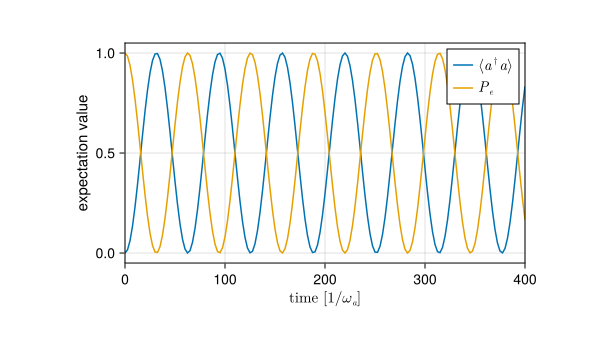
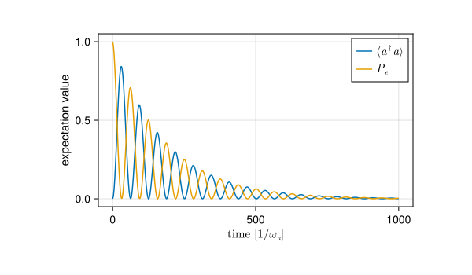
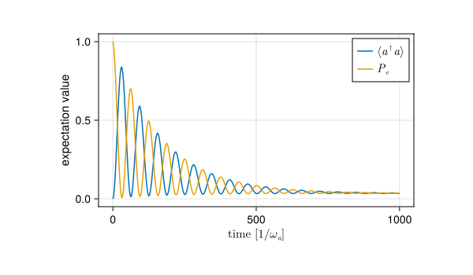

Vacuum Rabi oscillation
Inspirations taken from this QuTiP tutorial by J.R. Johansson, P.D. Nation, and C. Staufenbiel
In this notebook, the usage of QuantumToolbox.sesolve and QuantumToolbox.mesolve will be demonstrated with Jaynes-Cummings model (JC model) to observe Rabi oscillations in the isolated case and the dissipative case. In the dissipative case, a bosonic interacts with the cavity and the two-level atom in the JC model.
Introduction to Jaynes-Cumming model
The JC model is a simplest quantum mechanical model for light-matter interaction, describing an atom interacting with an external electromagnetic field. To simplify the interaction, the JC model considers a two-level atom interacting with a single bosonic mode, which can also be thought of as a single-mode cavity.
The Hamiltonian of JC model is given by
\[ \hat{H}_\text{tot} = \hat{H}_{\text{a}} + \hat{H}_{\text{c}} + \hat{H}_{\text{int}} \]
where
- \(\hat{H}_{\text{a}} = \frac{\omega_\text{a}}{2} \hat{\sigma}_z\): Hamiltonian for atom alone
- \(\hat{H}_{\text{c}} = \omega_\text{c} \hat{a}^\dagger \hat{a}\): Hamiltonian for cavity alone
- \(\hat{H}_{\text{int}} = \Omega \left( \hat{\sigma}^\dagger + \hat{\sigma} \right) \cdot \left( \hat{a}^\dagger + \hat{a} \right)\): Interaction Hamiltonian for coherent interaction
with
- \(\omega_\text{a}\): Frequency of the two-level atom
- \(\omega_\text{c}\): Frequency of the cavity’s electromagnetic mode
- \(\Omega\) : Coupling strength between the atom and the cavity
- \(\hat{\sigma}_z\) : Pauli-\(Z\) matrix. Equivalent to \(|e\rangle\langle e| - |g\rangle\langle g|\)
- \(\hat{a}\) : Annihilation operator of single-mode cavity
- \(\hat{\sigma}\) : Lowering operator of atom. Equivalent to \(|g\rangle\langle e|\)
By applying the rotating wave approximation (RWA), the counter rotating terms (\(\hat{\sigma} \cdot \hat{a}\) and its Hermitian conjugate) are ignored, yielding
\[ \hat{H}_\text{tot} \approx \hat{H}_{\text{a}} + \hat{H}_{\text{c}} + \Omega \left( \hat{\sigma} \cdot \hat{a}^\dagger + \hat{\sigma}^\dagger \cdot \hat{a} \right) \]
Usage of QuantumToolbox for JC model in general
import:
N = 2 # Fock space truncated dimension
ωa = 1
ωc = 1 * ωa # considering cavity and atom are in resonance
σz = sigmaz() ⊗ qeye(N) # order of tensor product should be consistent throughout
a = qeye(2) ⊗ destroy(N)
Ω = 0.05
σ = sigmam() ⊗ qeye(N)
Ha = ωa / 2 * σz
Hc = ωc * a' * a # the symbol `'` after a `QuantumObject` act as adjoint
Hint = Ω * (σ * a' + σ' * a)
Htot = Ha + Hc + Hint
print(Htot)
Quantum Object: type=Operator dims=[2, 2] size=(4, 4) ishermitian=true
4×4 SparseArrays.SparseMatrixCSC{ComplexF64, Int64} with 6 stored entries:
0.5+0.0im ⋅ ⋅ 0.05+0.0im
⋅ 1.5+0.0im ⋅ ⋅
⋅ ⋅ -0.5+0.0im ⋅
0.05+0.0im ⋅ ⋅ 0.5+0.0imIsolated case
For the case of the JC model being isolated, i.e., with no interaction with the surrounding environment, the time evolution is governed solely by the Schrödinger equation, \(\hat{H}|\psi(t)\rangle = \partial_t|\psi(t)\rangle\). The QuantumToolbox.sesolve function is ideal for simulating such pure state evolution.
For the context of Rabi problem, we set the initial state as \(\psi_0 = |e\rangle \otimes |0\rangle\), where \(|e\rangle\) is the excited state of the atom and \(|0\rangle\) is the vacuum state of the cavity.
e_ket = basis(2,0)
ψ0 = e_ket ⊗ fock(N, 0)
tlist = 0:2.5:1000 # a list of time points of interest
# define a list of operators whose expectation value dynamics exhibit Rabi oscillation
eop_ls = [
a' * a, # number operator of cavity
(e_ket * e_ket') ⊗ qeye(N), # excited state population in atom
]
sol = sesolve(Htot , ψ0, tlist; e_ops = eop_ls)
print(sol)Progress: [ ] 0.2% --- Elapsed Time: 0h 00m 02s (ETA: 0h 13m 20s)Progress: [==============================] 100.0% --- Elapsed Time: 0h 00m 02s (ETA: 0h 00m 00s)
Solution of time evolution
(return code: Success)
--------------------------
num_states = 1
num_expect = 2
ODE alg.: OrdinaryDiffEqTsit5.Tsit5{typeof(OrdinaryDiffEqCore.trivial_limiter!), typeof(OrdinaryDiffEqCore.trivial_limiter!), Static.False}(OrdinaryDiffEqCore.trivial_limiter!, OrdinaryDiffEqCore.trivial_limiter!, static(false))
abstol = 1.0e-8
reltol = 1.0e-6Compare the dynamics of \(| e \rangle\langle e|\) alongside \(a^\dagger a\)
n = real.(sol.expect[1, :])
e = real.(sol.expect[2, :])
fig_se = Figure(size = (600, 350))
ax_se = Axis(
fig_se[1, 1],
xlabel = L"time $[1/\omega_a]$",
ylabel = "expectation value",
xlabelsize = 15,
ylabelsize = 15,
width = 400,
height = 220
)
xlims!(ax_se, 0, 400)
lines!(ax_se, tlist, n, label = L"$\langle a^\dagger a \rangle$")
lines!(ax_se, tlist, e, label = L"$P_e$")
axislegend(ax_se; position = :rt, labelsize = 15)
display(fig_se);
In the above plot, the behaviour of the energy exchange between the atom and the cavity is clearly visible, addressing the Rabi problem.
Dissipative case
In contrast to isolated evolution, a realistic system interacts with its surrounding environment, leading to energy or particle exchange. Here, we focus on observing the Rabi oscillations of the JC model with the inclusion of interactions with an external environment at some finite temperature.
We start by reviewing the interaction Hamiltonians between the thermal field and atom/cavity
- Atom: \[ \hat{H}_{\text{a}}^\text{int} = \sum_l \alpha_l \left( \hat{b}_l + \hat{b}_l^\dagger \right) \left( \hat{\sigma} + \hat{\sigma}^\dagger \right) \]
- Cavity: \[ \hat{H}_{\text{c}}^\text{int} = \sum_l \beta_l \left( \hat{b}_l + \hat{b}_l^\dagger \right) \left( \hat{a} + \hat{a}^\dagger \right) \]
where for the \(l\)-th mode
- \(\alpha_l\) is the coupling strength with the atom
- \(\beta_l\) is the coupling strength with the cavity
- \(\hat{b}_l\) is the annihilation operator
By applying the aforementioned RWA and following the standard procedure of the Born-Markovian approximation, we obtain \(\kappa\), the cavity dissipation rate, and \(\gamma\), the atom dissipation rate. Consequently, the time evolution of the dissipative JC model is described by the Lindblad master equation.
\[ \dot{\hat{\rho}} = -\frac{i}{\hbar} [\hat{H}, \hat{\rho}] + \sum_{i = 1}^4 \mathcal{D}[\sqrt{\Gamma_i} \hat{S}_i]\left(\hat{\rho}\right) \]
where \(\sqrt{\Gamma_i} \hat{S}_i\) are the collapse operators, given by
| \(i\) | \(\Gamma_i\) | \(\hat{S}_i\) |
|---|---|---|
| 1 | \(\kappa \cdot n(\omega_c, T)\) | \(\hat{a}^\dagger\) |
| 2 | \(\kappa \cdot [1 + n(\omega_c, T)]\) | \(\hat{a}\) |
| 3 | \(\gamma \cdot n(\omega_a, T)\) | \(\hat{\sigma}^\dagger\) |
| 4 | \(\gamma \cdot [1 + n(\omega_a, T)]\) | \(\hat{\sigma}\) |
with \(n(\omega, T)\) being the Bose-Einstein distribution of the thermal field and \[ \mathcal{D}[\hat{\mathcal{O}}]\left(\cdot\right) = \hat{\mathcal{O}} \left(\cdot\right) \hat{\mathcal{O}}^\dagger - \frac{1}{2} \{ \hat{\mathcal{O}}^\dagger \hat{\mathcal{O}}, \cdot \} \] being the Lindblad dissipator.
Solve for evolutions in dissipative case
We can now define variables in julia and solve the evolution of dissipative JC model
# Collapse operators for interaction with the environment with variable dissipation rates
# and thermal energy of the environment. `n_thermal()` gives Bose-Einstein distribution
cop_ls(_γ, _κ, _KT) = (
√(_κ * n_thermal(ωc, _KT)) * a',
√(_κ * (1 + n_thermal(ωc, _KT))) * a,
√(_γ * n_thermal(ωa, _KT)) * σ',
√(_γ * (1 + n_thermal(ωa, _KT))) * σ,
)cop_ls (generic function with 1 method)# use the same ψ0, tlist, and eop_ls from isolated case
γ = 4e-3
κ = 7e-3
KT = 0 # thermal field at zero temperature
# `mesolve()` only has one additional keyword argument `c_ops` from `sesolve()`
sol_me = mesolve(Htot, ψ0, tlist, cop_ls(γ, κ, KT), e_ops = eop_ls)
print(sol_me)Progress: [ ] 0.2% --- Elapsed Time: 0h 00m 01s (ETA: 0h 06m 40s)Progress: [==============================] 100.0% --- Elapsed Time: 0h 00m 01s (ETA: 0h 00m 00s)
Solution of time evolution
(return code: Success)
--------------------------
num_states = 1
num_expect = 2
ODE alg.: OrdinaryDiffEqTsit5.Tsit5{typeof(OrdinaryDiffEqCore.trivial_limiter!), typeof(OrdinaryDiffEqCore.trivial_limiter!), Static.False}(OrdinaryDiffEqCore.trivial_limiter!, OrdinaryDiffEqCore.trivial_limiter!, static(false))
abstol = 1.0e-8
reltol = 1.0e-6n_me = real.(sol_me.expect[1, :])
e_me = real.(sol_me.expect[2, :])
fig_me = Figure(size = (600, 350))
ax_me = Axis(
fig_me[1, 1],
xlabel = L"time $[1/\omega_a]$",
ylabel = "expectation value",
xlabelsize = 15,
ylabelsize = 15,
width = 400,
height = 220
)
lines!(ax_me, tlist, n_me, label = L"\langle a^\dagger a \rangle")
lines!(ax_me, tlist, e_me, label = L"$P_e$")
axislegend(ax_me; position = :rt, labelsize = 15)
display(fig_me);
From the above example, one can see that the dissipative system is losing energy over time and asymptoting to zero. We can further consider the thermal field with finite temperature.
sol_me_ = mesolve(Htot, ψ0, tlist, cop_ls(γ, κ, 0.3 * ωa), e_ops = eop_ls) # replace KT with finite temperature
n_me_ = real.(sol_me_.expect[1, :])
e_me_ = real.(sol_me_.expect[2, :])
fig_me_ = Figure(size = (600, 350))
ax_me_ = Axis(
fig_me_[1, 1],
xlabel = L"time $[1/\omega_a]$",
ylabel = "expectation value",
xlabelsize = 15,
ylabelsize = 15,
width = 400,
height = 220
)
lines!(ax_me_, tlist, n_me_, label = L"\langle a^\dagger a \rangle")
lines!(ax_me_, tlist, e_me_, label = L"$P_e$")
axislegend(ax_me_; position = :rt, labelsize = 15)
display(fig_me_);Progress: [==============================] 100.0% --- Elapsed Time: 0h 00m 00s (ETA: 0h 00m 00s)
Despite the persistence of the asymptotic behaviour, the system no longer approaches zero but instead reaches a steady-state above zero. This indicates that the system has been thermalized by the environment.
Version Information
QuantumToolbox.jl: Quantum Toolbox in Julia
≡≡≡≡≡≡≡≡≡≡≡≡≡≡≡≡≡≡≡≡≡≡≡≡≡≡≡≡≡≡≡≡≡≡≡≡≡≡≡≡≡≡≡≡≡
Copyright © QuTiP team 2022 and later.
Current admin team:
Alberto Mercurio and Yi-Te Huang
Package information:
====================================
Julia Ver. 1.11.3
QuantumToolbox Ver. 0.25.2
SciMLOperators Ver. 0.3.12
LinearSolve Ver. 2.39.0
OrdinaryDiffEqCore Ver. 1.15.1
System information:
====================================
OS : Linux (x86_64-linux-gnu)
CPU : 4 × AMD EPYC 7763 64-Core Processor
Memory : 15.615 GB
WORD_SIZE: 64
LIBM : libopenlibm
LLVM : libLLVM-16.0.6 (ORCJIT, znver3)
BLAS : libopenblas64_.so (ilp64)
Threads : 4 (on 4 virtual cores)